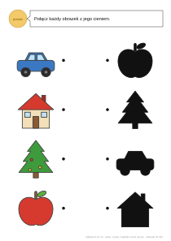
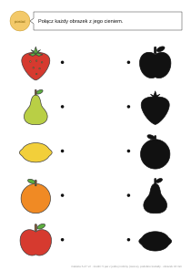
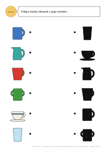

<!doctype html><meta charset="utf-8"><title>S-47 makiety</title>
<style>body{font:14px Arial;margin:16px;background:#eee}figure{display:inline-block;margin:8px;vertical-align:top}img{width:420px;background:#fff;box-shadow:0 1px 4px #0003}figcaption{margin-top:4px;max-width:420px}</style>
<figure><figcaption>łatwy: 4 pary, zupełnie różne rzeczy</figcaption></figure>
<figure><figcaption>średni: 5 par z jednej rodziny (owoce), podobne kształty</figcaption></figure>
<figure><figcaption>trudny: 6 par, warianty jednej rzeczy (kubki), różny szczegół obrysu</figcaption></figure>